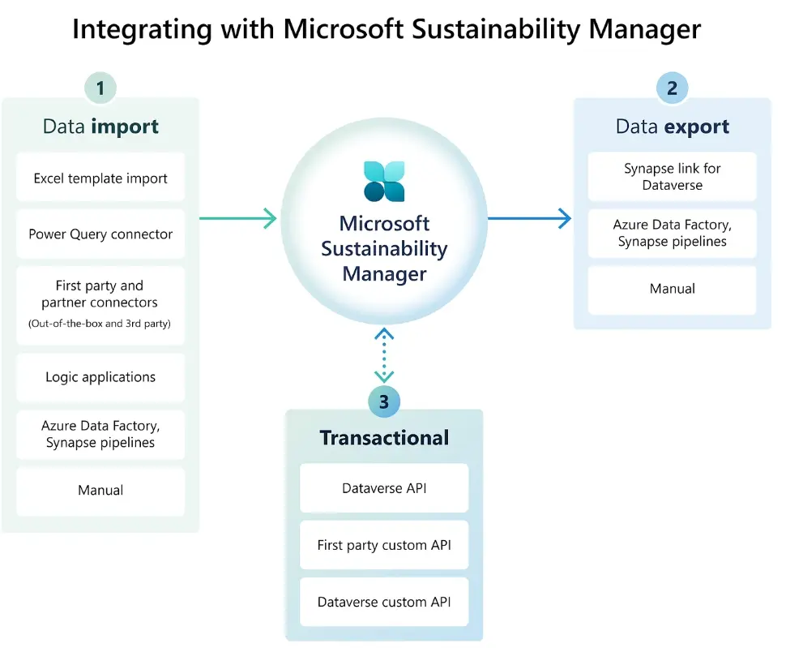

Microsoft Sustainability Manager (MSM) is a platform that automates manual processes and efficiently records, visualizes, and reports, reducing emissions, water, and waste impact. It achieves this by breaking down big data, automating data connections and calculations, and applying a Microsoft Cloud for Sustainability data model to remove data uncertainty. The platform's unique feature is its ability to extend core capabilities using familiar Azure and Power Platform tools, allowing for the creation of custom solutions. This flexibility enables the generation of new formulas or custom reports tailored to the organization's needs.
Organizations at any stage of their sustainability journey can confidently use MSM, as it provides comprehensive, integrated, and automated sustainability management, unifying data intelligence.
MSM can help organizations:
- Report the impact and progress of the goals in near real-time.
- Visualize an organization's emissions activities, water, and waste data.
- Create different scenarios to visualize and assess the impact on the organization.
- Collaborate with value chain entities to refine and scale sustainability initiatives and transform business end-to-end.
Also Read: CSRD Value Chain Requirements in Sustainability Reporting
Data import
Microsoft Sustainability Manager (MSM) offers robust data connectors that combine and synchronize data from different sources, making accessing and using information easier. This feature significantly improves data accessibility and quality, simplifying data management and eliminating manual errors. The efficiency of these data connectors is a crucial benefit of using MSM for sustainability management. MSM offers robust sustainability automation tools for data import, reducing manual errors.
MSM allows organizations to use data connectors to import data, automate data flow, improve data quality, and simplify data management, thereby eliminating manual errors.
MSM provides the following data-connecting options:
- Excel template connectors
- Power query connectors
-
Custom connectors for data providers:
- Emissions Impact Dashboard for Azure
- Arcadia Utility Cloud for Electricity
- Ecolab Data Connector
- Arcadia Utility Cloud for Natural Gas
- EcoVadis Assessments

The user can access different data connectors to automate data import and collection using these tools. Users can also choose a specific timeline for the data to be imported automatically using the connectors.
Also Read: Understanding ESG Assurance: Ensuring Data Confidence for Compliance & Sustainability Reporting
Emission Management Feature:
MSM provides default calculation models for emission scopes 1, 2, and 3, which users can implement when calculating emissions for their organization. MSM also allows users to customize the models according to their requirements, which gives the added advantage of not just depending on the platform's default calculation models. MSM also facilitates the use of Copilot if it is activated in the user's environment; the user can select Create with a model builder or create a calculation model with Copilot. MSM serves as a comprehensive emission management software, offering customizable calculation models.
MSM provides default emission factors (EFs) databases, such as DEFRA, EPA, and IPCC, that calculate an organization's emissions. MSM also allows the organization to apply custom EFs according to its requirements and data availability.
The allocation profile helps visualize emissions generated using multiple methods without impacting the default emissions reporting. With allocations, an organization can visualize how its emissions are distributed based on a parameter, such as per employee headcount or group subsidiary.
Also Read: An Overview of ESRS 1 and ESRS 2 cross cutting standard
Water Sustainability Feature:
Water sustainability features help organizations with water sustainability disclosures and regulatory water quality reporting records. This feature helps an organization to estimate, analyze, and report on water quantity and quality data to meet use cases.
Water quantity data helps an organization analyze and report the balance between water withdrawn, consumed, and discharged from various water sources at the organization and facility levels. MSM water sustainability reporting platform can help with regulatory water quality reporting.
Water quality data includes facility-level measurements related to the chemical, physical, and biological properties of water linked to reference data, such as sampling procedures and testing methods. This data helps address effluent quantities and their reference ranges in wastewater for regulatory water quality reporting.
Waste Management Feature:
Sustainable waste management features help organizations unify, prepare, analyze, and report waste quantity and quality characteristics. Organizations can use these features to file sustainability disclosures and meet compliance requirements on hazardous and radioactive waste sent to landfills. With MSM's waste management tools, organizations can track and report waste data effectively.
Waste quantity data includes measured waste data such as the weight or volume of waste disposed, recovered, or recycled and the total waste generated by different waste streams and materials.
This data helps the user understand, analyze, and report on the total waste generated and the amount disposed to landfills at a facility and organization level. This feature can also monitor whether the measured values are within permissible limits defined by regulatory standards.
Data Analytics:
The platform provides advanced ESG data analytics solutions, offering insights into emissions, water usage, waste management, and other key sustainability metrics. MSM provides various features for data analytics, such as executive dashboards, emission insights, water insights, waste insights, scorecards and goals, intelligent insights, and what-if analysis, to visualize and analyze an organization's various ESG parameters. The ESG analytics capabilities of MSM provide detailed insights, helping organizations visualize their environmental, social, and governance metrics.
Dashboard:
The executive dashboard in MSM provides an overview of total emissions, revenue intensity, and renewable energy categorized by scope, geography, organizational unit, and facility. It also allows the user to visualize the data by applying various filters such as accounting method (location-based and market-based), years, organizational hierarchy, organization unit, and location.
Insights:
Emission Insights:
- The emission insights also provide features to view trends summary statistics, total emissions, with a breakdown by scope 1, 2, and 3, revenue intensity (revenue intensity score, with a breakdown by scope 1, 2, and 3), and renewable energy (%) (renewable energy as a percentage of total power, together with a breakdown by renewable energy source).
- The deep analysis reports feature in Microsoft Cloud for Sustainability helps users explore data more deeply and uncover insights that might not be available in other reports.
- Allocations dashboards allow users to view how carbon emissions are attributed to different parts of an organization.
- The Custom Dimensions Report tab provides the following capabilities: View a time chart of CO2eE emissions broken out by custom dimension strings (which can be types of products and services).
Water Insights:
- The water insights show various parameters of an organization's water quantity transaction by reporting period. The parameters include water withdrawn, water discharged, water consumed, and water recycled at the facility or organization level.
- The water insights show various parameters of an organization's water quantity transaction by reporting period. The parameters include water withdrawn, water discharged, water consumed, and water recycled at the facility or organization level.
- Like other dashboards, several filters allow the user to visualize the data according to the reporting period, facility, organizational hierarchy, water-stressed areas, and water source types (surface water, seawater, groundwater, third-party water, and produced water).
Waste Insights:
- The waste insights provide a view of an organization's waste quantity and quality data. According to the reporting period, they show the total waste generated by the diversion method and hazardous and radioactive waste types at a facility or organizational unit level.
- The waste generated, recovered, and disposed of is viewed according to the total waste, timeline, stream, and category of the waste, as well as the material of the waste.
- MSM also helps users analyze the circularity of an organization's waste by providing various data insights into the input material and the finished product.
Intelligent Insights:
- This feature lets users use the power of an AI model to perform a deeper analysis of the calculated and precalculated emissions data through outlier, trend, and correlation insights.
Scorecards and Goals:
Scorecards and goals enable organizations to track ESG parameters against key business objectives set up by the organizations. Goals can be created based on current and target values manually entered or derived from connected data sources. The system can automatically update the current values and status from the connected data sources even though manual input is provided. To get help with effective ESG management, visit our ESG Platform page.
What-if Analysis:
This is a premium feature for scenario analysis. It uses a custom AI model to forecast the impact of several business practice changes on your organization's carbon emissions footprint. This can help an organization apply more sound emission reduction strategies and accelerate its overall sustainability goal. The platform's emission models make MSM a powerful carbon footprint tracking software.
Reporting:
MSM allows users to generate quantitative reports that extract emissions, water, and waste data. The reports are in Excel format, which an organization can use to submit the data for public disclosure. If a user has Copilot enabled in the MSM environment, it can also be used to create reports as required.
There are six types of reports available to be downloaded according to the data provided:
- Emissions report
- Water report
- Waste report
- Circularity report
- Corporate Sustainability Reporting Directive (CSRD) report
- Data trail
If a user wants to report goals along with its CSRD report , MSM provides an option to report the following goals of the organization:
- Scope 1
- Scope 2 (Location based)
- Scope 2 (Market-based)
- Scope 3
- Total GHG emissions
- Water management
- Waste management
- Air pollutants
- Soil pollutants
- Substances of concern and/or very high.
Role of MSM in accelerating sustainability reporting
MSM leverages AI-driven sustainability management, enabling organizations to automate data processing, generate insights, and optimize sustainability performance. MSM offers to record, report, and reduce an organization's environmental impacts using data and AI. By increasing automated data connections, MSM helps organizations track their operational ecological footprint and the footprint of the entities in their value chain.
MSM uses a mix of data ingestion methods to simplify data integration, calculation, and reporting using Microsoft Cloud for Sustainability. This enables continuous visibility into an organization's sustainability activities and precise recording of the impact on the business.
By using AI-driven solutions, MSM helps companies simplify sustainability management and enhance data accuracy, and with ecoPRISM's expertise, you can achieve your sustainability goals.